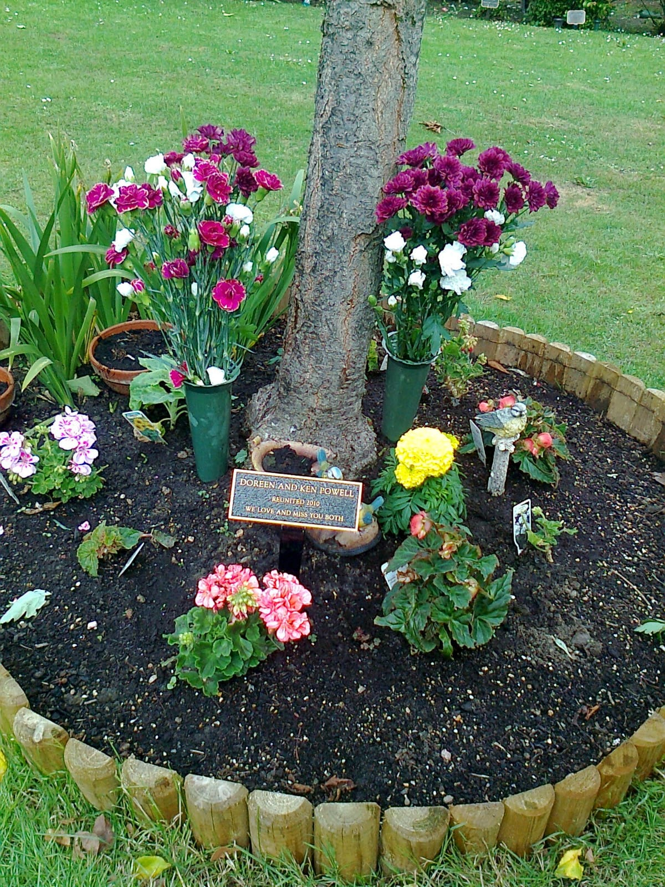

- 🏡Home🏡
- 👨‍🎓Schools👨‍🎓
- 💼Career💼
- 📈CV📉
- 🛩️Flying✈️
- ☎️Contact Me☎️
- 📜Various📜
My Life!⌛️
The Life Of Gary Powell. Created 3rd October 2022.

I was born on the 14th August 1951 in Hemel Hempstead, Hertsfordshire UK. I am the second oldest out of 5 children. I have been retired for the last 5 years & living in Kuala Lumpur Malaysia for the last 26 years. Previous to that I was in Hong Kong for 6 1/2 years.
I have an older brother Chris & 3 sisters. Jackie is the oldest, then comes Karen & then Leslie. They all live in the UK in Essex.
Chris lives in Benfleet, & is retired (Pensioner). He has 2 daughters Sam & Michelle. He was married to Doreen, Click-->But Sadly She Passed Away. In Loving Memory Of
DOREEN ELIZABETH POWELL
Dear Wife, Mum, Nanny & Sister.
Sadly Missed
Always In Our Thoughts
1949 - 2014
Jackie lives in Eastwood & is retired (Old Aged Pensioner). She has a son Adam & a daughter Hayley. She is married to Keith.
Karen lives a bit further out at South Woodham Ferrers. She has a son Wills & a daughter Laura. She is married to Mark.
Leslie also lives in Eastwood. She is not married, & doesen't have children. She has been with Darryl for many years.
The 3 girls all attended Mabelreign Girls High, & Chris was at Ellis Robins.
My mum's name was Doreen & my dad's Ken (Click-->Both Sadly Passed Away.)  DOREEN AND KEN POWELL
Reunited 2010
WE LOVE AND MISS YOU BOTH
Buried Together At The Southend Crematorium.
Mum 11th May 1988
Dad 1st July 2010 Both my mum & dad served in the second world war. My dad in the navy & my mum as a Morse Code operator. My dad was a brick layer by trade & my mum when working was in various jobs. Dad was still brick laying through to the mid 50's & had to re-think his long term employment plans. Fortunately, he had an offer of work in Zambia (Africa), which he accepted & flew out for a 1 year contract in 1956.
After his contract ended, he was offered a chance of employment in Rhodesia (now Zimbabwe). At the same time my mum, myself, Chris & Jackie left the UK for Rhodesia by ship. I'm not sure where the ship docked & how we got to Salisbury, but we did.
Our first house when we arrived in Salisbury, was in a suburb called Cranborne, with rows & rows of temporary accommodation all with corrigated roofs made from Asbestos. I remember being there for a short while, then moving on.
Our next house was a Prefab bungalow in Mabelreign, 78th Avenue. The meaning of "prefabs" meant they were manufactured off site in advance, and easily assembled. Ours, was a 3 bedroom house with a lounge, kitchen & bathroom. Our house had a nice sized garden with an out-house for tools, gardening stuff etc, & a house for the full time "House Boy". I think his name was Gwengwe!. There was a car port, where dad would park his Austin Cambridge & get it cleaned by the "Garden Boy" to keep it a show piece & the envy of the rest of Mabelreign.
After the house in 78th Avenue, we moved to a bigger "L" shaped house, again in Mabelreign (Number 2, 57th Avenue). Nice house with an out-house. Nice big garden which backed onto an open field through a small gate. The out house was where I lived for many months & felt good being independent. We brought a puppy alsatian dog named "Beauty", but sadly he had distempa & we had to get him put down. We then got another alsatian named "Prince" & he was an ex police dog, who failed to get into the force for some reason, so we ended up with him from the RSPCA. The good part was he was already well trained.
I remember a few of my mates & I were playing cops & robbers with toy guns, & this one mate saw me outside in the garden & pointed his gun at me from the bedroom widow as he was inside, & Prince's training kicked in & tackled my mate to the ground. Can't remember if my mate was hurt or not. One night when I was sleeping in the out-house, Prince was with me, & I lock the metal door from the inside. Well someone was trying to get in & was shaking & pushing this metal door. That's when Prince started growling at them, & as soon as they heard him, you could hear the footsteps of them running away (should have let Prince out 😂)
Dad had constant work now in Salisbury & my mum was working at the Royal Insurance Group (Angwa Street I think) as a typist & when I used to go & visit her in her lunch hour, we would have a good old chat about different things, with all her mates. Great times!!.
He was well underway with his new house he was building in 58th Avenue. This house had all the mod cons, & even had an outside shower. A big front garden which overlooked Salisbury drive, & Warren Hills & a nice driveway in to the property through the big wrought iron gates.
Dad was doing an interim job at "Lever Brothers" & got together with a friend of his from the Mabelreign Boxing Club to form a Limited Company in the construction field, as equal partners. The company was named "Kenmark Builders" (Ken being Ken Powell & Mark being Mark Van Rensburg). In the early days of Kenmark, the company was just managing small jobs according to dad, like extensions & other odds & sodds. In the meantime, an offer was made to them to import & distribute fork lift trucks from South Africa as sole agents under the "KenMark" banner. Not quite sure how they managed that as there was an embargo on exportation to Rhodesia from the outside world. Anyway, they made quite a few sales according to dad & on top of that the building/construction side of the business was taking off at a rapid pace with some major projects like complete houses & some other major contracts (Gov't I Think). Kenmark became so successful that a road in Bluff Hill where their offices still are, was named after them called (Click--> "Kenmark Crescent") (See the red arrow on the map)
But in Kenmark's latter years things were not going well between dad & Mark, (so dad was telling me) & that Mark was embezzling funds, which dad could never prove, because the Chief Financial Officer (CFO) was Mark's wife. When dad challenged Mark on this again, Mark brought his son into the company & according to dad he was edged out bit by bit. If I remember right Van Rensburg bought dad's 50% shares for some ridiculous amount of money, so low infact, dad said he was forced to accept it otherwise it meant him staying in the company, which by now things were so different for him that he didn't want anything more to do with Kenmark. Apparently Van Rensburg died a short time later & his son became president of the company.
I felt quite sorry for dad, as he was the worker with all the knowledge & building experience in that company, whereas Mark was basically a pen pusher. In the end dad had no choice but to leave Kenmark.
I think dad was really unhappy after leaving the company & to make things worse, was leaving Rhodesia. When he arrived in the UK after coming from that lifestyle that he had been used to, his work & the house he built, good weather & the general way of life, & to end up in that tiny house in Wenham drive must have been really depressing for him. On the other hand mum had always wanted to go back to the UK as she openly admitted that she didn't like living in Rhodesia.
Dad went back to brick laying when he arrived back in the UK & also did some window cleaning part time, with his ladders, bucket, squeegy & cloths all piled high in his old brown Volvo Heritage. Not sure where he put the ladders. There is a hugh warehouse along the A127 going towards Southend on the left (just before the Fairfield Mini & BMW dealers) & it's made of red bricks only. That was one of dad's creations.
All being said about his Volvo, he did have some great cars & what we class as 'Classics' today. He had some super cars like a Zephyr Zodiac (6 Cylinder) an
Austin Westminster
(6 Cylinder) an
Austin Westminster & the good old faithful 'Opel Rekord'
& the good old faithful 'Opel Rekord' ,
with the number plate S63854. And finally,
the Ford Consul
,
with the number plate S63854. And finally,
the Ford Consul
Speaking of cars, I remember when I got my driving licence, I asked dad "Now that I'm a qualified driver, can I use the Opel" which to my amazement he said yes!!.
Well that was it, I had the pedal to the metal with all my mates in the back zooming around the streets of Salisbury, up & down Union Avenue posing in the Mean Machine 🏎️😉 a real "Chick" puller 😂.
Used it many times at the Mabelreign drive in, fishing trips to Lake McIlwaine,(now Lake Chivero) & many other great adventures while we had it. Dad took us to Beira in that car, which for me was one of the best times I ever had. We stayed in the "Beehives" & we normally went there in a group with the Morris family, & most of the kids were the same age, so found plenty to do & have a lot of fun. Inside the Estoril compound which was exclusively for foreign tourists, there was the entertainment area with so much to do like the roller skating arena, pool tables, ping pong & much more. They had a great swimming pool & of course there was the sea as well.
Watching the turtles was also exciting as they weren't around very often. And of course, there's the water sports! And in the evening the BBQ outside the Beehives was great fun.
The Shipwreck & Lighthouse) were a tourist attraction, & also you daren't leave Beira without the compulsory photo's.
Those days are a distant memory & are long gone due to the guerilla Civil war between 1977 - 1992. This is when the portuguese influence ceased & tourism ended.
I remember my first car I bought. It was a 1950's Ford Popular Sit Up & Beg.
What an absolute beauty!
Now, this is an all time classic. (0 to 60 mph in 3 weeks) Spent many hours working on this "Crumpet Catcher", & learnt alot about engines. After that, I bought a Ford Anglia 105e.
Another great looking car!
Had all the latest gadgets like steering wheel, brakes, even a gear stick. This was such an advanced car, even the police used them. Great car & had lots of fun in it. Spent a lot of time maintaining it, but in the end like all other great things in life, it had to go.
Used to drive to the Quorn hotel in Avondale regularly on Saturday, for lunch time drinks, & the Sherwood Arms for the regular friday night sessions, where local bands were playing. Good fun. I learnt to play guitar, & formed a band with a couple of mates Billy Blackburn & Alan Vale. I was the lead guitarist & lead vocalist. We were pretty good & we covered all the songs that were in the singles charts from the Beatles to the Monkeys. We played in Sinoia, which we would drive to on a Saturday. We bought ourselves a VW Combi van & travelled all over with all our instruments, playing anywhere for whoever would pay us. Great days & great fun.
I remember after school Coke at the Mabelreign garage, the Police station (Had to go there as me & my mates set a farm on fire).
I was subpoenaed to attend court, to testify, but I couldn't cause I was sick. What happened was, a friend of mine said should we go to Mermaids pool & I said I dont't have any money, so no!. He said to me & another friend who was there, not to worry about the money, as he had enough. So off we went later on that afternoon by Taxi!!!. I didn't ask & just went along for the ride. When we got back from Mermaids, we went into Salisbury to a gun shop, where we bought 3 rifles & he paid for them. Now in those days anybody could buy a gun with no questions asked as Rhodesia was at war. Anyway, we went shooting & had a real blast. When I got home, there was a police car at the house & I was interviewed by the detective on what we had been doing & where did the money come from to do all these things, & I said I don't know & that all the money was supplied by this friend of ours.
Well what happened was his mother ran a bakery & she would close up shop at 1:00 pm on a Friday. After she got home, what this friend did was take the shop keys from her purse, go to the bakery, open the safe & clear it out of all the cash. Well we had no idea that he did this as he never said where he got the money from & we just assumed it was his money. Apparently, the judge ordered that he pay back all the money (which ran into hundreds of $). So that was all good fun!
I left Rhodesia in 1970 & took the train from Salisbury to Johannesburg. Here we swapped trains, where I travelled 1st class on board the Blue Train to Cape Town. It took 4 days in total & it was spectacular, what with the best food & the different scenery, the wild life & the stops, it was great fun. Finally reached Cape Town & found a cheap B & B & spent the next 7 days just travelling around. Came the big day boarding the Union Castle Safmarine Lines SA Oranje
The "SA Oranje" with Table Mountain behind. Even an Anglia 105e in the botton left of the picture & a Lions Maid Ice Cream bike next to the red car to Southampton. I actually found this picture of the actual ship, with Table Mountain in the background (well pleased with that).
It was a 12 day cruise & it was absolutely fantastic (apart from the sea sickness). The food was all first class & I can't describe the amout of different choices I had. It was one of the best & exciting times of my life. Hooked up with a few crew members & they were great guys & had a few good drinks with them, as they invited me & a few other guests to the crews bar. So yes! good trip & good times. Finally docked at Southampton & one of the crew invited me to stay at his mums house at Walton-On-Thames for the night, which was really nice of him & saved me taking the train from Southampton. So the next morning he drove me into central London which again was really nice of him & it saved me a lot of money. He dropped me outside Fortnum & Masons (Fantastic Shop) & so spent a while looking around places like "Harrods" "Piccadilly" & loads of others.
I hopped on a train the next morning and made my way to Margate, & stayed with Bill. It was nice & every Friday, I would go to the butcher down the road in Garlinge, & would buy Rump or "T" bone steak for us. Bill loved it, as that was a real treat for her. I went to the "Rodney" pub almost next to Bill's house where grandad used to drink. But I must admit, it felt really weird not knowing anyone, & everything was so alien & being in a different country. Still I enjoyed the time while I was there, living at 100 High Street, Garlinge with Bill, but I felt I needed to get down to Southend to see Auntie & Alex. Stayed at Wenham drive for a short while until I got my own flat in Westcliff just off Hamlet Court road. I really liked Southend (probably cause it was a seaside town) & there was so much to do in those early days. After Auntie passed away, Chris & I went to the house in Wenham & stripped a lot of the junk away. We re-wired the whole house & knocked down the dividing wall between the dining room & the kitchen, which made it open planned & gave that small house a lot more room. Stuck new wall paper up & it really improved the place.
I bought my first house in Benfleet in the late 70's. It was a nice bungalow, with a big garden. Sold it, & bought a new house in Havering Suffolk. I was offered £5000 above what I paid for it, & I hadn't even paid my first mortgage installment yet. So that was a good investment.
Got married in 1982. Bought a ground floor flat in Ashley road Crouch End, North London. Have 2 boys Kestyn & Julien. Both of them were schooled in the UK. Jules has his own Estate Agency business in Leeds, & Kes is also an Estate Agent, working in Dubai. Both are single, but Jules has a baby girl "Arabella" who is now 9 months old & makes me a grandad. Kes has no chidren yet. Got divorced & re-married a great girl Michelle in Kuala Lumpur. Michelle is an english teacher which she does on a part time basis. She works at the Cambridge college once a week & a few private students a few times a week. She was also teaching mathmatics to private students, but because of Covid, the classes had to stop. We have a 19 year old boy Aaron, & he's currently at college studying computer science, but he finds it's too much pressure on him, so he will be studying something else at the same college starting in January 2023. He just passed his driving test, & his grandmother (Wai Ying) bought him a brand new car. So I hardly see him now, as he's always out & about, & he has a new girlfriend, so he often spends a lot of time at her place, & sometimes won't see him for days on end.
I don't do much now apart from my code writing, and being retired gives me all the hours I need to study & practice. Another thing is because I have this Essential Tremor, I have slowed down with my typing skills, whereas if I didn't have it, I would be back up there at 60+ words a minute. That's probably why it's taking me so long to finish the coding!.
Also, I have been diagnosed with Chronic Obstructive Pulmonary Disease (COPD) as well as emphysema. It's a real battle at times & quite frightening, especially struggling for air. I'm attending a Lung specialist here in KL & given different courses of tablets from Steroids, Antibiotics for the chest infection, Inhalers & others which are all helping, as I feel a lot better since starting the treatment, but still a long way to go.